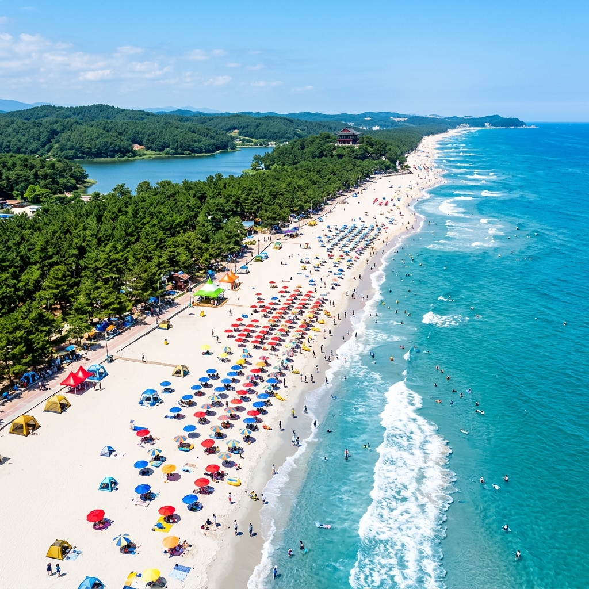
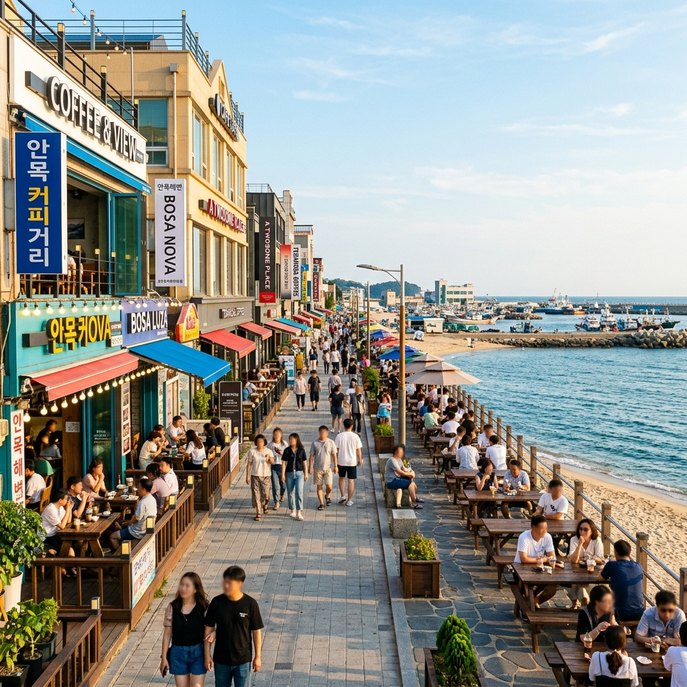
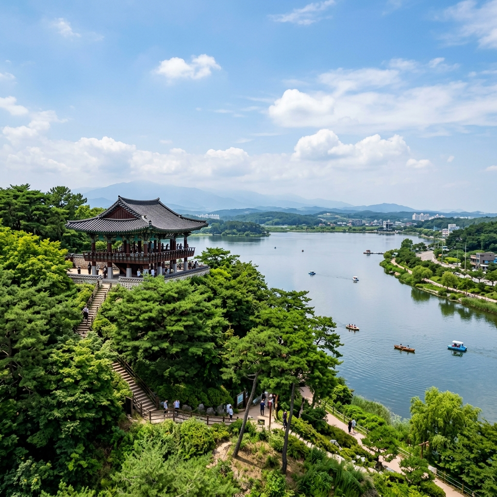

경포해수욕장은 강릉을 대표하는 해수욕장으로, 매년 여름 정식 개장을 통해 안전요원 배치와 편의시설 운영이 시작됩니다. 2026년 기준으로 경포해수욕장의 정식 개장일은 7월 4일(토)이며, 폐장은 8월 23일(일)로 예정되어 있습니다.
정식 개장 전에도 해변에는 자유롭게 접근할 수 있습니다. 다만 안전요원이 배치되지 않으므로 입수는 권장하지 않습니다. 6월 말~7월 초 사이 해수온도와 날씨가 갖춰지면 개장 직후 첫 주말이 가장 붐빕니다. 개장 바로 직후보다는 7월 중하순이 혼잡도 관리 면에서 나을 수 있습니다.
경포 해변에는 주요 축제도 함께 운영됩니다. 경포 여름 해변 축제는 7월 3일부터 8월 22일까지 운영될 예정이며, 공연·야시장·체험 부스 등 다양한 프로그램을 즐길 수 있습니다. 저녁에는 해변 조명과 함께 분위기가 특히 좋습니다.
비치비어(Beach Beer) 행사는 7월 3일~5일 짧게 운영됩니다. 축제 개막 시즌에 맞춰 방문한다면 개장 첫 주말 전후가 가장 볼거리가 많습니다. 다만 숙박비와 주차 난이도는 이 시기가 가장 높으므로 평일 방문도 고려해 보세요.
경포해수욕장 주차는 성수기에 가장 큰 난관 중 하나입니다. 해수욕장 바로 앞 해안도로 주변 주차장은 오전 10시만 넘어도 꽉 차는 경우가 많습니다.
제가 작년에 사용했던 방법은 경포호 주변 무료 주차 공간이었습니다. 경포호 산책로 근처에는 요금 없이 주차 가능한 공간이 있으며, 해수욕장까지 도보 10~15분 거리입니다. 아침 일찍 도착하면 자리 잡기 어렵지 않습니다.
또 다른 방법으로는 강릉 시내 쪽 유료 주차장에 주차 후 시내버스나 택시를 이용하는 방법이 있습니다. 강릉역에서 경포해수욕장까지 버스가 자주 운행하므로, KTX를 이용한 대중교통 당일치기도 현실적인 선택입니다.
주말 성수기에는 오전 7~8시 도착이 안정적입니다. 오전 중에 일찍 해변을 즐기고 점심 이후에는 안목 커피거리 쪽으로 이동하면 붐비는 타이밍을 비켜갈 수 있습니다.
안목 커피거리는 강릉 커피 문화의 발상지로 꼽히는 곳입니다. 경포해수욕장에서 차로 10분 내외 거리에 위치해 있어, 해변을 즐긴 뒤 이어서 커피거리로 이동하는 동선이 가장 자연스럽습니다.
안목 커피거리에는 대형 프랜차이즈보다 인디 카페들이 줄지어 있고, 바다 전망을 갖춘 곳도 여럿입니다. 커피 한 잔과 함께 동해 바다를 바라보는 오후 시간이 강릉 여행의 하이라이트라는 분들이 많습니다.
카페 마다 테라스 유무, 반려동물 동반 가능 여부가 다르므로, 방문 전 인스타그램이나 카카오맵으로 미리 체크해두는 것을 권장드립니다. 주말 오후에는 대기가 생기는 카페도 있으므로 오전에 일찍 자리 잡거나 평일을 노리는 것이 좋습니다.
안목 커피거리 주차는 안목항 주차장을 이용하거나, 거리 주변 골목에 일부 노상 주차 공간이 있습니다. 단, 성수기에는 이곳 주차도 쉽지 않으므로 경포 주차 때와 마찬가지로 일찍 이동하는 것이 현명합니다.

서울 또는 수도권에서 강릉으로 당일치기를 계획하고 있다면, 다음 동선을 참고해 보세요.
KTX 당일치기: 서울역 오전 6~7시 출발 → 강릉역 오전 8시 전후 도착 → 도착 후 경포해수욕장(버스 이동) → 오전 해변 산책 및 물놀이 → 점심(경포 주변 횟집 또는 중앙시장 방향) → 오후 안목 커피거리 → 정동진 또는 주문진 선택 → 오후 6~8시 KTX 강릉 출발
자차 당일치기: 새벽 5~6시 출발 → 영동고속도로 경유 강릉 IC → 오전 8~9시 경포 도착(주차 여유 있음) → 해변 → 안목 커피거리 → 강릉 중앙시장(닭갈비·감자옹심이) → 오후 5~7시 출발 귀경
강릉 중앙시장에서의 식사는 당일치기 코스에 꼭 포함시켜 보세요. 닭갈비로 유명한 집들이 다수 있으며, 감자옹심이나 순두부 등 강원도 로컬 음식도 즐길 수 있습니다.
정동진은 경포에서 차로 30분 정도 거리입니다. 정동진역 앞 모래시계 공원이 주요 관광 포인트이며, 해맞이 명소로 알려진 곳이라 일출 시각에 방문하면 특별한 경험이 됩니다. 당일치기에 정동진을 포함하면 반나절이 추가로 필요하므로 일정을 넉넉하게 잡으세요.
경포해수욕장 공식 개장은 7월 4일이지만, 6월 말에 미리 방문하는 것도 충분히 의미가 있습니다. 이 시기의 장점을 짚어드립니다.
사람이 훨씬 적습니다: 개장 전 해변은 입수 금지지만, 모래사장 산책과 사진 촬영에는 이상적인 환경입니다. 수평선을 배경으로 한 사진을 찍기 위해 인파 없는 6월 경포를 찾는 분들도 있습니다.
숙박비가 저렴합니다: 7월 이후 성수기와 비교했을 때 6월 강릉 숙박비는 훨씬 합리적입니다. 경포 인근 호텔이나 펜션의 경우 7월 극성수기 대비 30~50% 저렴한 경우도 있습니다.
날씨가 맑은 날이 많습니다: 강릉은 영동 지역 특성상 태백산맥이 구름을 막아 서울보다 맑은 날이 많은 편입니다. 6월 중하순은 장마 시작 전후이지만, 강릉은 서쪽보다 상대적으로 날씨가 안정적인 경우가 많습니다.

장점
경포해수욕장의 가장 큰 장점은 해안선 길이가 길다는 점입니다. 약 1.8km에 이르는 백사장이 있어 인파가 몰려도 자리를 찾을 수 있습니다. 주변 경포호와 경포대가 가까워 해변과 자연 경관을 함께 즐길 수 있다는 것도 큰 매력입니다.
안목 커피거리, 강릉 중앙시장, 정동진 등 인근 명소와 연계 동선이 탄탄한 점도 장점입니다. 강릉은 도시 규모에 비해 볼거리와 먹거리가 밀집해 있어 당일치기 효율이 높은 여행지입니다.
아쉬운 점
성수기 주차 문제가 고질적입니다. 자가용을 이용한다면 주차 스트레스를 각오해야 합니다. 특히 해수욕장 바로 앞 인기 주차장은 주말 오전 일찍 마감됩니다.
여름 성수기 숙박비 상승도 부담입니다. 7월 말~8월 초 경포 인근 숙박 시설은 비수기 대비 2~3배 비싸지는 경우가 흔합니다. 숙박을 포함한 일정이라면 2~3개월 전 예약이 권장됩니다.
경포호: 해수욕장 바로 옆에 위치한 석호(바다와 연결된 호수)입니다. 경포호 일주 산책로가 잘 정비되어 있어 이른 아침이나 저녁 산책에 제격입니다. 철새 도래지로도 알려져 있습니다.
경포대: 강릉 10경 중 하나로 꼽히는 조선 시대 누각입니다. 경포호 옆 작은 산 위에 위치해 있으며, 경포호와 동해 바다를 동시에 내려다볼 수 있는 전망이 일품입니다.
허균·허난설헌 기념공원: 홍길동전을 쓴 허균과 조선 최고의 여성 시인 허난설헌이 태어난 곳입니다. 경포에서 가깝고 입장료가 없어 산책 겸 문화 탐방으로 좋습니다.
주문진 수산시장: 경포에서 북쪽으로 약 15km 거리입니다. 신선한 오징어와 생선 회가 주요 메뉴이며, 관광객보다는 현지인들이 즐겨 찾는 분위기입니다.
해수욕장 방문 시 기본 준비물을 챙겨두세요. 자외선차단제(SPF50+ 권장), 라쉬가드 또는 수영복, 수건, 갈아입을 옷, 신발을 넣을 비닐봉투가 기본입니다. 선글라스와 모자도 여름 강릉 햇볕에는 필수입니다.
물속에 들어갈 경우 해수욕장 안전요원의 안내에 따르세요. 경포해수욕장은 수심 변화가 급격한 구간이 있어, 비치 플래그(깃발) 색상으로 입수 가능 여부를 확인하는 습관을 들이는 것이 좋습니다. 적색 또는 황색 깃발이 세워져 있으면 입수 금지 또는 주의 구간입니다.
반려동물을 동반한 경우, 해수욕장 정식 개장 기간에는 반려동물의 해변 입장이 제한될 수 있습니다. 방문 전 강릉시청 또는 경포해수욕장 공식 안내를 확인해 주세요.